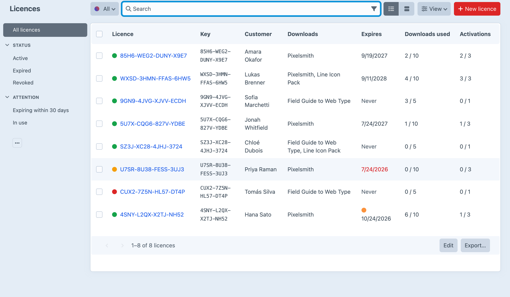
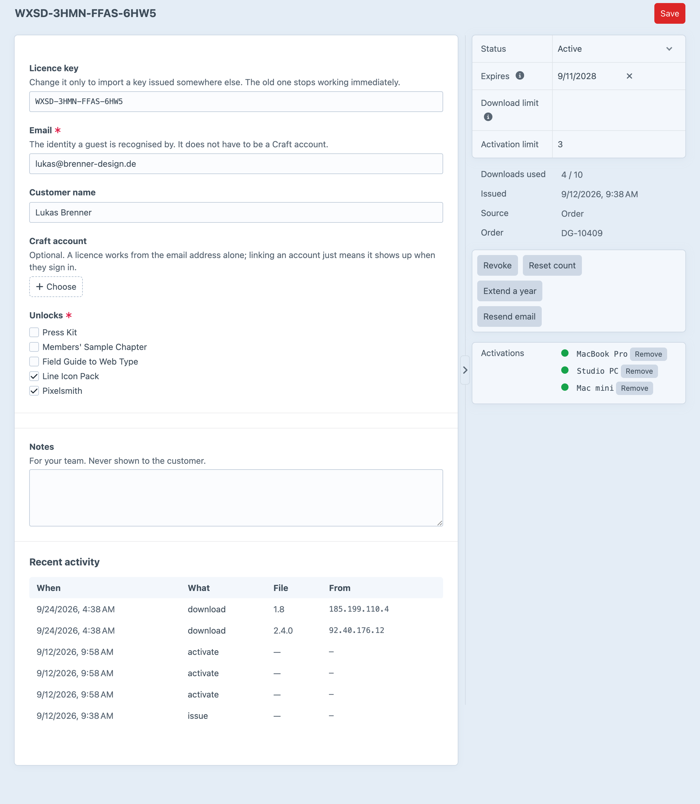

Everything after the sale:
gated downloads and software licensing.
A signed URL can't be recalled. A Digits link is a row, so a refund also kills the link that's already in the customer's inbox.
Download and seat limits are a single conditional update. The database decides, not a read followed by a write.
Key, customer, what it unlocks, when it ends, and how much of it has been used.

Activate, deactivate, check and versions, each returning a machine-readable code. A reinstall on the same machine reuses its seat instead of taking a new one.
Each licence shows the machines it's activated on, what it unlocks and how much has been used.
